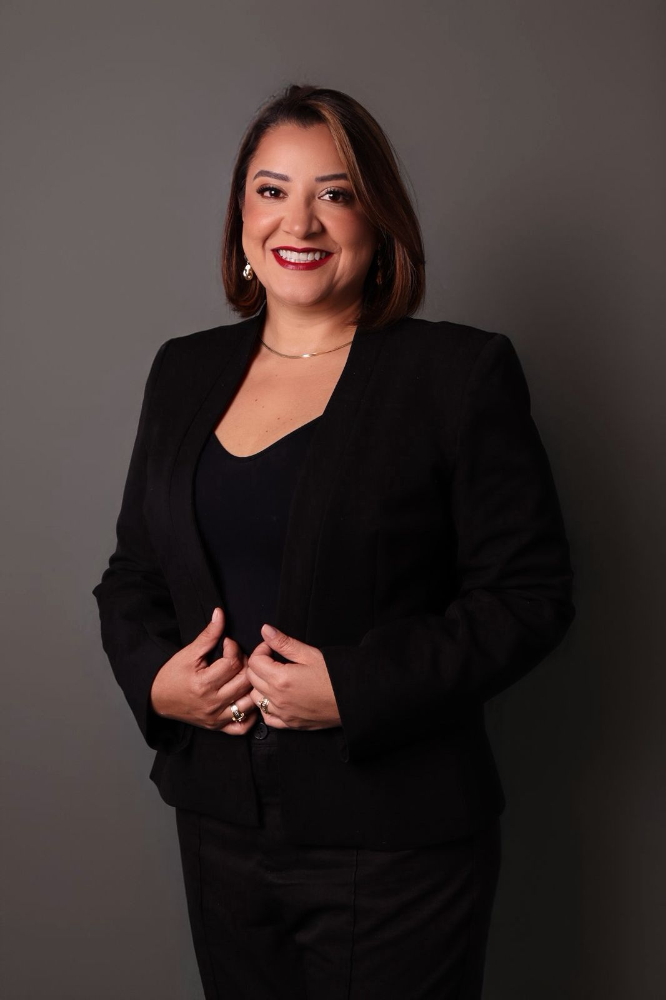

Dra. Valesca Cassiano é advogada com ampla atuação em Direito Trabalhista, dedicada à defesa dos direitos do trabalhador com estratégia, técnica e atendimento humanizado.
Mais de 2.200 processos conduzidos.
Mais de 8.000 clientes atendidos com excelência.
Atuação em milhares de processos trabalhistas com conhecimento aprofundado da legislação.
Cada caso é analisado com estratégia jurídica personalizada.
Compromisso com rapidez e eficiência na busca pelos direitos do trabalhador.
Encerramento do vínculo entre trabalhador e empresa com análise completa dos valores devidos.
Quando o trabalhador exerce atividade sem carteira assinada, mas com características de emprego formal.
Violação da honra, imagem ou dignidade do trabalhador.
Constrangimentos e humilhações repetitivas no ambiente de trabalho.
Direito ao recebimento de horas trabalhadas além da jornada legal.
Exposição a condições prejudiciais à saúde.
Trabalho realizado em condições de risco.
Salário pago sem registro em carteira.
Lesões ocorridas durante a atividade profissional.
Doenças desenvolvidas em razão do trabalho.
Falta de recolhimento do Fundo de Garantia.